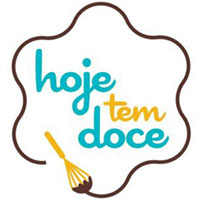

Trabalhos
-

Design de Interfaces Gráficas Volumétricas
O objetivo do projeto foi se tornar um estudo na criação de Interface Gráfica Espacial Volumétrica,com a criação de elementos gráficos, como por exemplo botões, janelas, layout de texto, barras, entre outros.
-

Hoje tem Doce - Cocolateria
Objetivo desse projeto foi refazer uma marca de uma confeiteira selecionada para participar do programa Chocolateria.
-

UI Kito Briquete
Este trabalho tinha como objetivo criar um site navegável usando as ferramentas aprendidas durante o curso.
-

Cartaz Interativo Iron Mam
O objetivo deste trabalho foi recriar um cartaz de cinema usando um melhor conceito e tipografia.
-

Starling
O objetivo deste trabalho era criar uma Logomarca para um empresa fictícia e que abordaria um tema de sua escolha.
-

Manual do Aluno
Observar as necessidades das pessoas ou alguma falha na comunicação é uma ótima maneira de se ter uma ideia de um projeto de design que possa realmente ajudar as pessoas no bem-estar.
-
Simulação UI Netflix
Com base nos estudos realizados na Udemy no curso de Design de Interfaces com foco em UI e UX, primeiro trabalho realizado foi entender o conceito por trás da Interface criada pela Netflix.